Background & Context
Rightel, one of Iran’s three major mobile operators, serves millions of prepaid and postpaid users. My Rightel is the primary self-service channel for checking balance, buying packages, renewing subscriptions, and making payments—flows that directly drive revenue and retention.
The project was a systemic overhaul: transforming a fragmented, feature-stacked tool into a cohesive system focused on clarity, speed, and trust. User feedback and internal audits highlighted friction in time-sensitive tasks such as buying a package during a low-balance emergency.
My Role
As lead Product Designer, I owned the redesign from discovery through final delivery.
- Redesigned the Dashboard, Package Purchase, Balance, and Payment journeys
- Built the foundational design system, reusable components, variants, and Figma Variables
- Produced high-fidelity interactive prototypes
- Balanced user needs, business goals, and technical constraints with cross-functional partners
- Conducted design reviews and implementation QA
What changed
- Turned the dashboard into a quick decision surface with prioritized data and direct actions
- Added scannable package cards, instant chip filters, and value badges
- Simplified payment with stronger hierarchy, clear feedback, and credit-limit handling
- Standardized the product logic: understand status → decide → act
- Shipped the best version possible under backend and business constraints while planning for personalization
Problem Statement
With a generous 6-month timeline — 3 months dedicated to building a solid design system and another 3 months for the full mobile and web app redesign — we weren't rushed. This gave me the breathing room to dig deep, think critically, and involve the right people early.
Here's what I actually did in the discovery phase:
Audited the existing experience thoroughly
I spent time exploring Rightel's current website and app in real scenarios (as a user would). I mapped out the flows, noted inconsistencies, and felt firsthand how frustrating it was to find basic info or complete a quick task.
Pinpointed the biggest user frustrations
From that hands-on exploration (and early feedback loops), these core pain points stood out clearly:
- Unclear balance & usage visibility: Important info was scattered across screens. Users had to hunt through sections and piece together their real situation — no quick “Am I safe?” glance.
- Package buying felt overwhelming and disconnected: Options appeared without any context or help. No hints on what's popular or suitable, so people froze in decision paralysis — especially when they just needed a fast top-up.
- Payments triggered real stress: The flow felt unpredictable: hidden options, confusing errors, and no clear “why” for what showed up. Credit-based payments were especially nerve-wracking in urgent moments.
- Overall product-level mess: Journeys were broken and inconsistent — heavy hamburger menu dependency, duplicated patterns, similar info shown differently everywhere, no clear separation between “see status,” “decide,” and “act.” Switching tasks meant high mental effort, making the app feel unreliable.
Ran stakeholder workshops
I brought product, dev, and business folks together to align on these problems — making sure everyone saw the same pain points and agreed on priorities before we jumped into solutions.
Conducted user interviews
I talked directly to real users to validate what I observed. Hearing their stories (frustration when data runs out late at night, confusion during package choice, anxiety at payment) confirmed the issues and added emotional depth.
If I'd had even more time, I would have layered in quantitative analysis — heatmaps, session recordings, drop-off metrics — to spot behavioral patterns at scale.
These steps gave us a shared, human-centered understanding of why the old app was losing users and revenue in critical moments — setting a strong foundation for the systemic redesign that followed.
Desk Research & Competitor Analysis
My Irancell
Package purchase begins directly from bottom navigation and opens a focused page with Daily, Weekly, Monthly, and All filters. Personalized suggestions and “Best Seller” indicators speed decisions, while progress visuals communicate balance urgency.
Hamrah Man
Contextual package access from the home screen, clear prepaid/postpaid separation, transparent payment options, and detailed usage reports formed useful benchmarks.
Key Findings & Metrics
Key insights
- Account information was fragmented across screens.
- Package selection created unnecessary decision friction.
- Payment lacked transparency at critical moments.
Primary success metrics
- Payment Completion Rate
- Package Purchase Conversion Rate
Secondary metrics
- Time to Decision
- Balance Visibility Rate
- Error Recovery Rate
System Evolution
The core challenge was not missing data, but missing contextual clarity. Users navigated multiple sections to answer a simple question: “Am I running out of data?”
1. Dashboard Experience
Problem: balance and usage existed, but users had to interpret multiple views with no single point of truth.
Solution: centralize critical status, prioritize remaining balance and active package, add progress indicators, and connect status to relevant actions.
Impact: faster at-a-glance understanding, less repeated navigation, and a stronger status-to-action connection.
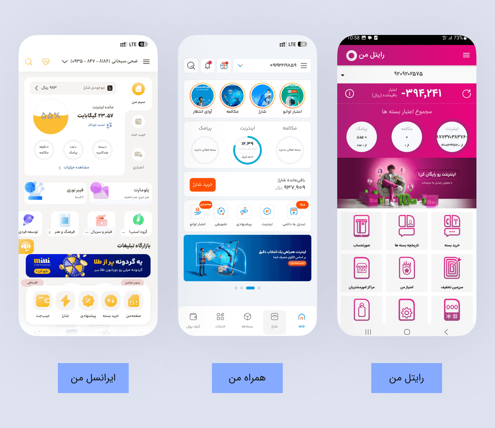
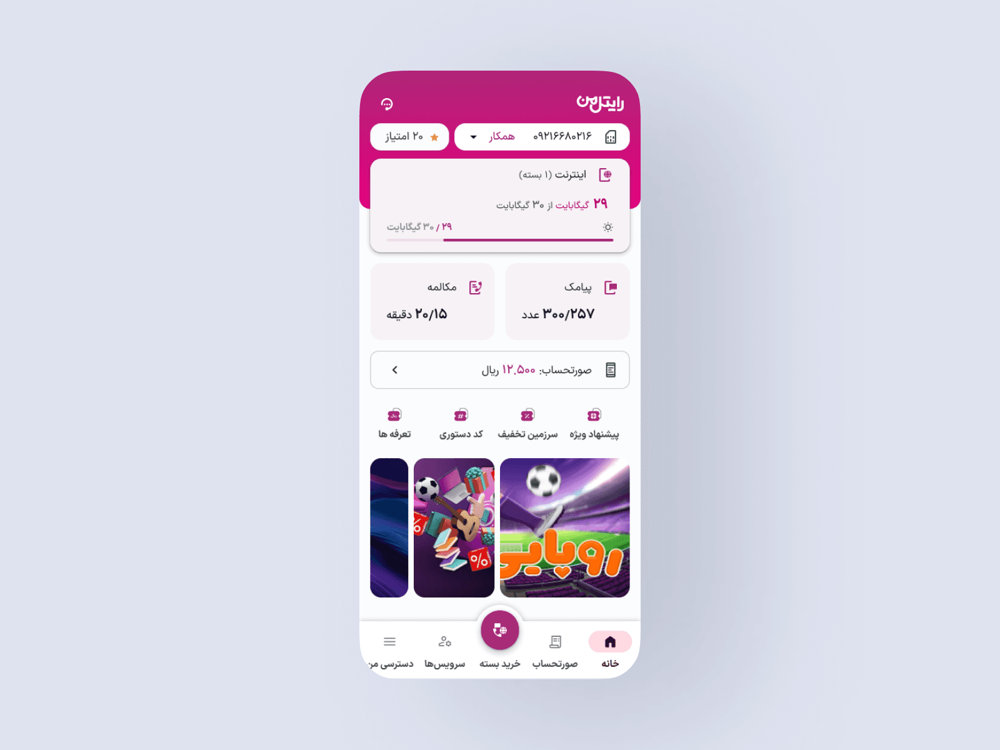
2. Package Selection
Problem: package selection was disconnected from current usage, and renewal and first-time purchase flows were treated alike.
Solution: reorganize packages, improve scanning and comparison, reduce visual noise, and continue directly from the dashboard context.
Impact: lower drop-off, faster decisions, and a stronger connection between usage and purchase behavior.
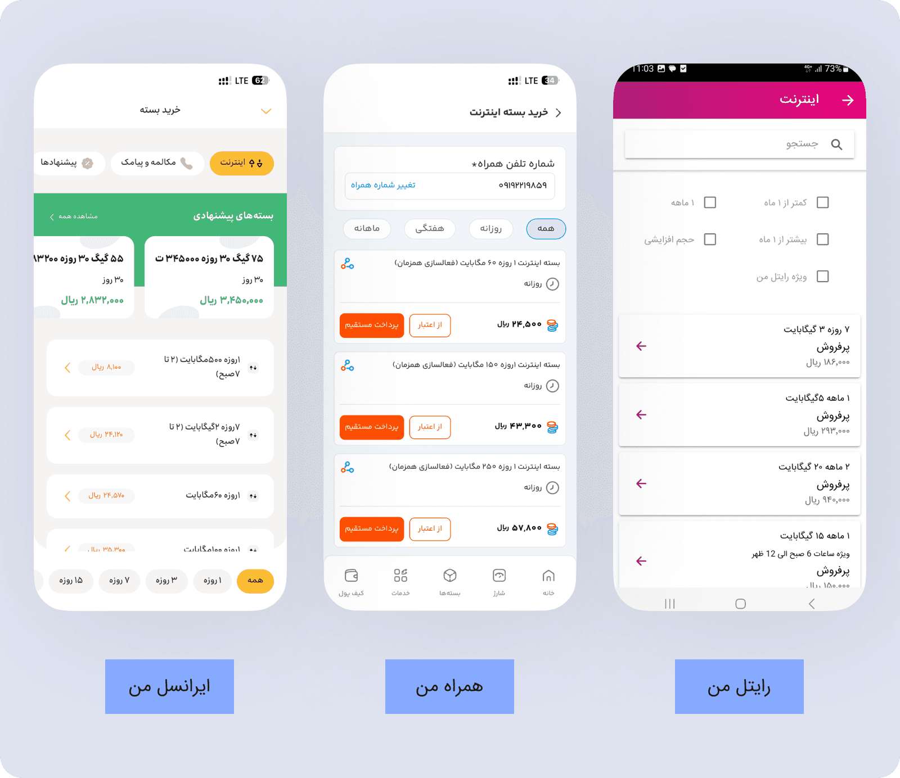
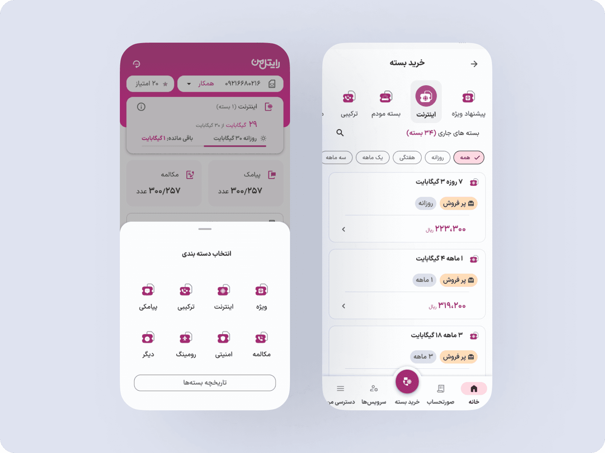
3. Balance Experience
Problem: raw numbers showed how much was consumed without explaining what it meant.
Solution: structure total, used, and remaining values; prioritize usage signals; and introduce a Package Usage Report. The experience shifted from showing numbers to explaining consumption.
Impact: lower cognitive load, faster comprehension, greater confidence, and better readiness to purchase.
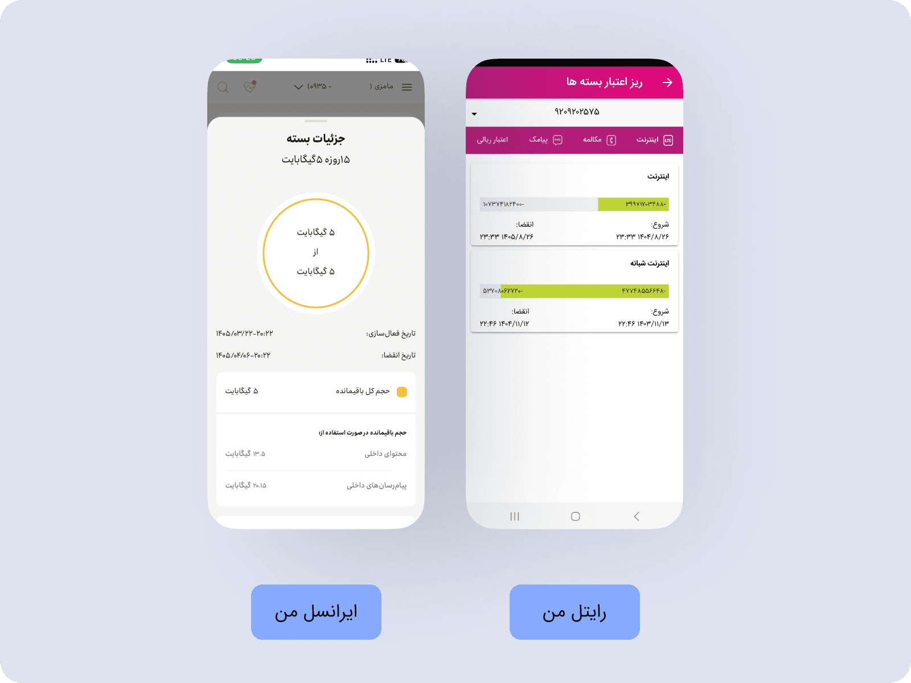
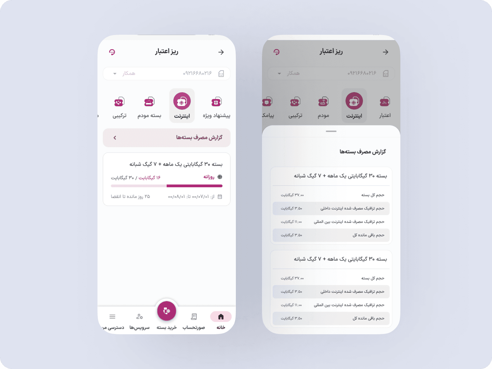
4. Payment Experience
Problem: details were difficult to verify, options lacked transparency, and users at their credit limit could not continue.
Solution: create a dedicated credit-increase flow, allow in-app credit management, reduce support dependency, and connect it to billing.
Impact: more trust, less abandonment, and clearer outcomes.
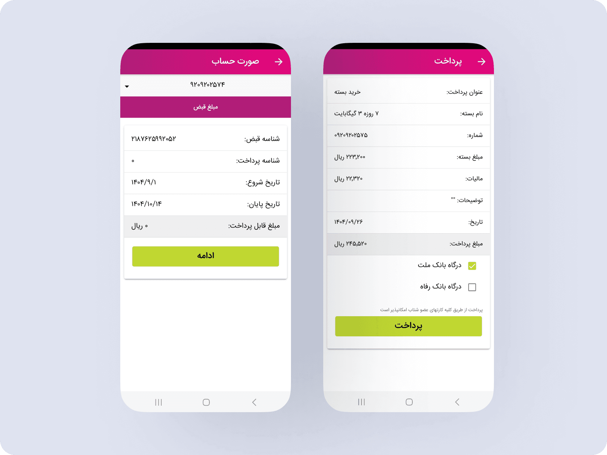
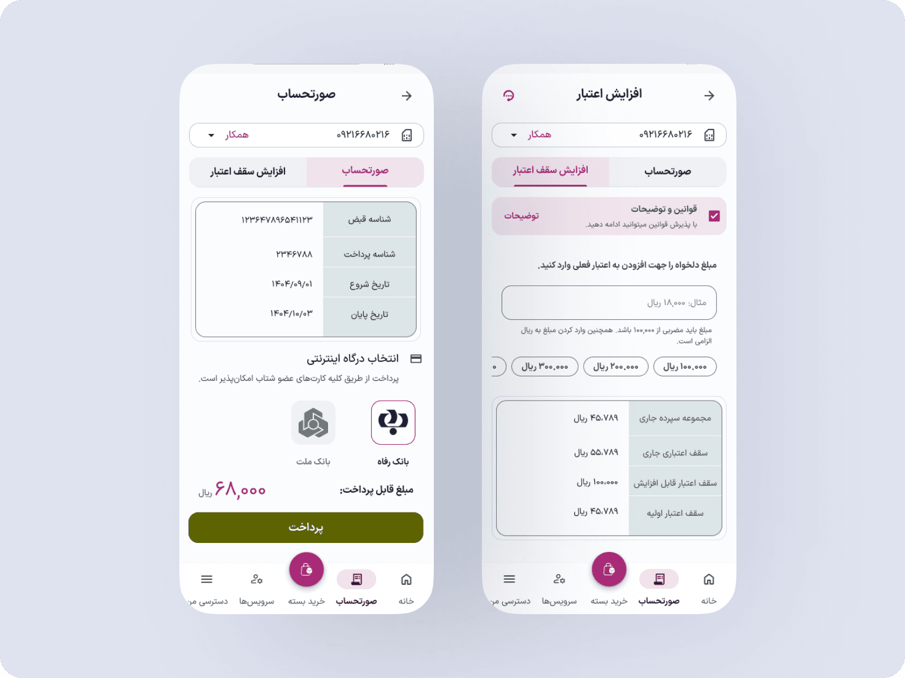
Design Trade-offs & Constraints
One of the key payment methods in the app is paying directly from user credit. However, surfacing credit-related information in the payment step introduced both technical constraints and UX trade-offs.
Technical Constraint
Displaying the user’s remaining credit on the payment screen required an additional backend query.
- This query would increase load on the payment flow.
- It risked slowing down a highly sensitive, conversion-critical step.
- Due to backend limitations, showing real-time credit balance was not feasible at the time.
As a result, the remaining credit was intentionally not displayed on the payment screen in the shipped version.
Constraint-driven release
To avoid confusion and failed payments:
- If the user’s credit was insufficient for the selected package, the option to pay via credit was automatically hidden.
- Only bank gateway payment options were shown in those cases.
This ensured technical stability and prevented unsuccessful payment attempts.
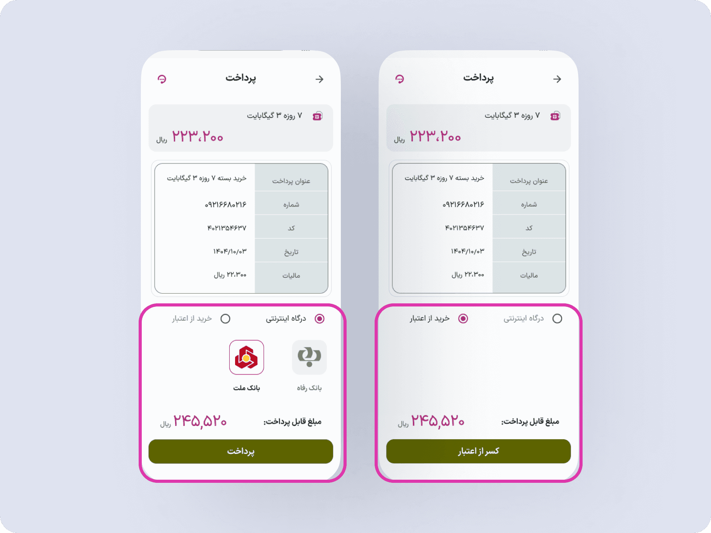
Resulting UX Issue
While technically safe, this approach introduced a usability problem:
- Payment method availability was not transparent, making it hard for users to understand why certain options appeared or disappeared.
- This increased cognitive load at a critical moment in the payment flow.
Proposed improvement (Designed, not shipped)
To make the payment decision clearer, a new design was proposed:
- Explicitly displaying the user’s remaining credit.
- Showing whether the credit is sufficient for the selected package.
- Providing a clear visual explanation for available and unavailable payment methods.
- An “Increase Credit” action to allow users to resolve insufficient balance directly.
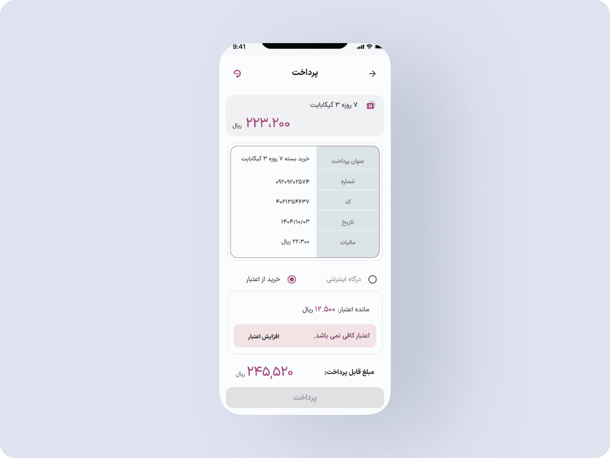
Why This Version Was Still Problematic
- The “Increase Credit” action pulled users out of the purchase flow.
- For postpaid users, they first needed to settle their bill via a bank gateway, wait for settlement to be processed, then repeat the payment flow again.
- This multi-step detour significantly increased drop-off risk, payment abandonment, and user frustration.
Final Decision
- Remove the “Increase Credit” action from the payment screen.
- Keep the payment flow focused on a single, uninterrupted transaction.
- Avoid sending users into parallel financial flows during checkout.
This decision prioritized completion rate and flow continuity over offering more options.
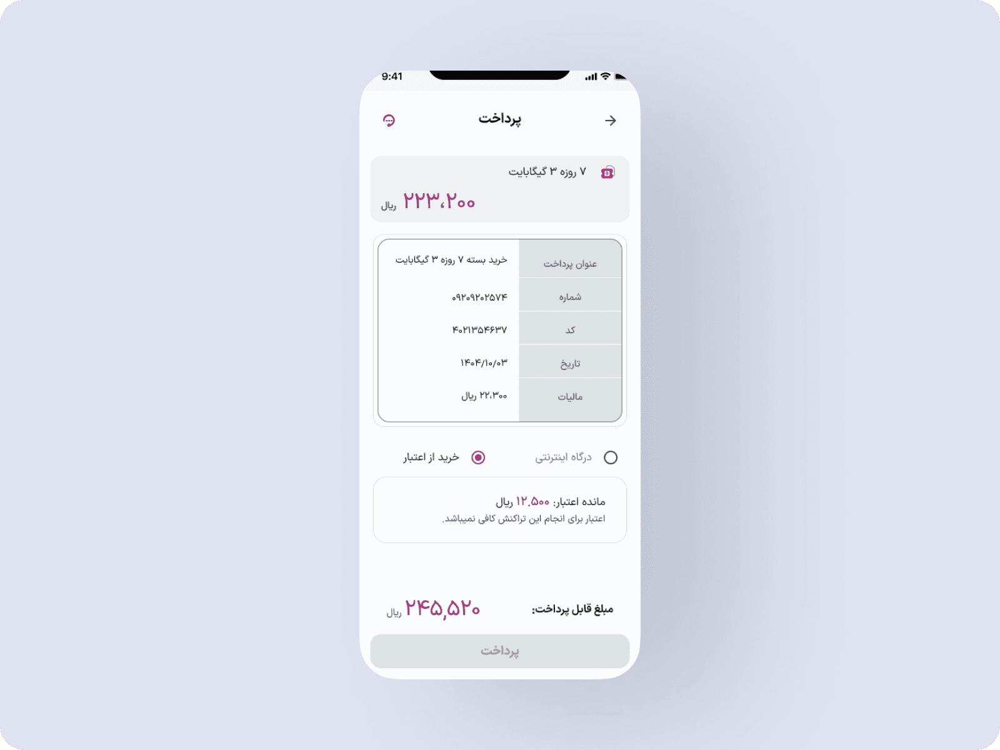
Why This Matters
This iteration highlights how payment design is not just about visibility, but about:
- Minimizing flow interruptions.
- Respecting backend realities.
- Reducing cognitive and operational friction at conversion points.
It also demonstrates deliberate trade-offs between ideal UX and practical product constraints.
Testing
Validation Strategy
To reduce implementation risk and validate key assumptions, the proposed solutions were evaluated through a combination of qualitative feedback and measurable product metrics.
Pre-Launch Validation
Interactive prototypes were tested with target users to evaluate:
- Clarity of information hierarchy
- Ease of completing critical tasks
- Understanding of usage and payment status
- Overall confidence in decision-making
The findings helped identify usability issues and refine interaction patterns before development.
Post-Launch Validation
Following release, the impact of the redesign would be measured through controlled experiments and behavioral analytics.
Key metrics include:
- Package purchase conversion rate
- Payment completion rate
- Drop-off rate across critical flows
- Frequency of balance and usage checks
- Engagement with Package Usage Report
Design iterations would be prioritized based on both quantitative results and user feedback.
Key Consideration
Because these flows directly impact revenue and customer trust, even small interface changes require careful validation before being rolled out at scale.